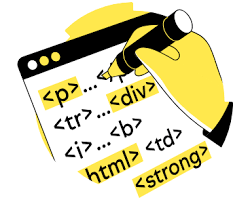

¿Qué es HTML?
HTML (Lenguaje de Marcas de Hipertexto, del inglés HyperText Markup Language) es el componente más básico de la Web. Define el significado y la estructura del contenido web. Además de HTML, generalmente se utilizan otras tecnologías para describir la apariencia/presentación de una página web (CSS) o la funcionalidad/comportamiento (JavaScript).
Hipertexto" hace referencia a los enlaces que conectan páginas web entre sí, ya sea dentro de un único sitio web o entre sitios web. Los enlaces son un aspecto fundamental de la Web. Al subir contenido a Internet y vincularlo a las páginas creadas por otras personas, te conviertes en un participante activo en la «World Wide Web» (Red Informática Mundial).
¿Qué son las Etiquetas?
Las "tags" HTML, o "etiquetas" HTML, son códigos utilizados para "marcar" el texto de una página web, con el fin de dar instrucciones al navegador sobre cómo mostrarlo.
Es decir, las etiquetas HTML son el lenguaje utilizado para estructurar y definir el contenido en un documento HTML. Estas etiquetas se encuentran en el HTML (o Lenguaje de Marcado de Hipertexto) de cada página.

Cada etiqueta contiene instrucciones sencillas que indican al navegador cómo dar formato al texto y a definir los diversos elementos de la página web. Al aplicar estas etiquetas de marcado a los diferentes elementos del texto, se indica al navegador cómo mostrarlos al usuario, lo que permite crear páginas web estructuradas y con un diseño coherente.
La Semantica:
¿Qué es HTML semantico?
El HTML semántico, también conocido como marcado semántico, engloba las etiquetas HTML que transmiten el significado (o semántica) de su contenido.
Al añadir etiquetas HTML semánticas a tus páginas, proporcionas información adicional a los buscadores sobre la funcionalidad e importancia de las secciones de tus páginas.
(A diferencia del HTML no semántico, que utiliza etiquetas que no transmiten directamente su significado).

Principales etieutas semanticas:
- <header>: la etiqueta de encabezamiento define el contenido introductorio de una página o sección.
- <nav>: la etiqueta de navegación se utiliza para los enlaces de navegación. Puede anidarse dentro de la etiqueta <header>, pero las etiquetas <nav> de navegación secundaria también suelen usarse en otras secciones de la página.
- <main>: esta etiqueta contiene el contenido principal (también llamado cuerpo) de una página. Solo debería haber una etiqueta <main> por página.
- <article>: la etiqueta artículo define el contenido independiente de la página o web en la que se encuentra. No significa necesariamente una "entrada del blog". Piensa en ella más bien como "una prenda de vestir": una etiqueta independiente que puede emplearse en varios contextos.
- <section>: utilizar <section> es una forma de agrupar contenidos que tratan sobre temas similares. Las etiquetas de sección son diferentes a las de artículo, no son necesariamente autónomas, sino que forman parte de algo más.
- <aside>: un elemento "aside" define el contenido de menor importancia. Suele emplearse para las barras laterales, que incluyen información complementaria pero no esencial.
- <footer>: usa <footer> en la parte inferior de una página. La etiqueta suele incluir información de contacto, derechos de autor y navegación por la web.